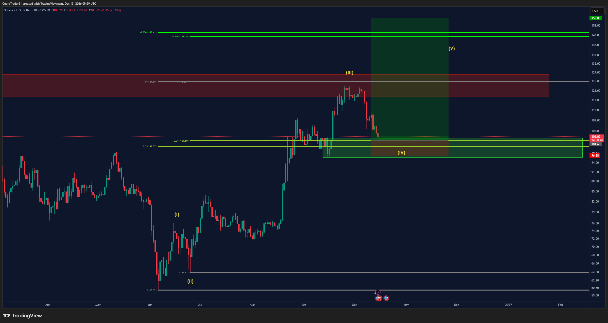
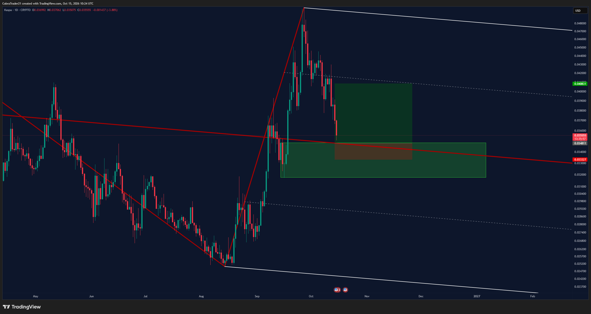
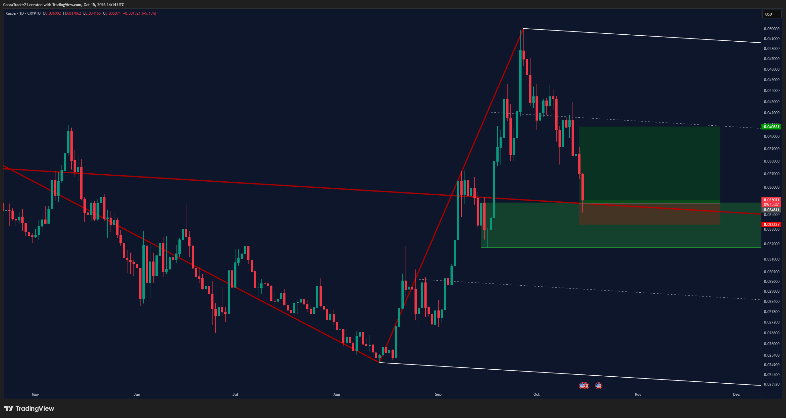
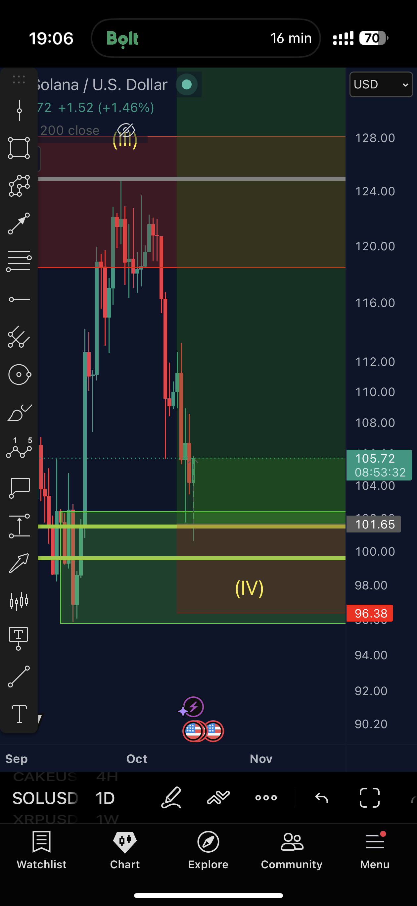
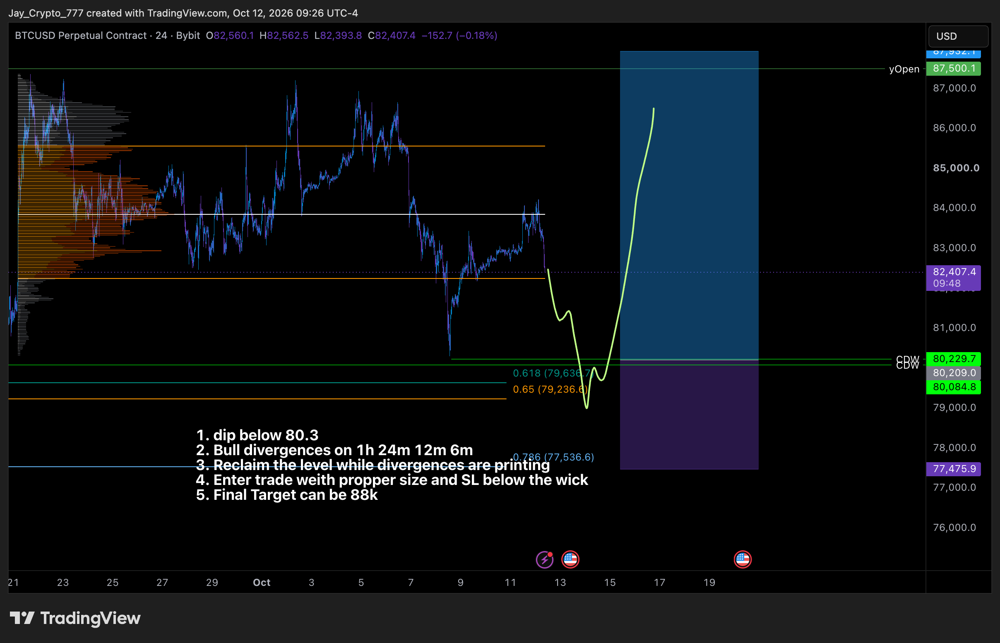

📡 Trades do Discord – 15/10/2026
Preços: BTC 82.232 · ETH 2.423 · SOL 105,63 · APT 0,8168 · ASTER 0,7057 · KAS 0,0358
- 🟠 Ordem limite pendente: o trade foi postado, mas o preço ainda não chegou na entrada.
- 🟢 Posição aberta: a entrada já foi executada e o trade está valendo.
- 🔴 Estopou: o preço bateu no stop e o trade foi encerrado com perda.
- 📐 Plano no gráfico: cenário desenhado pelo analista, ainda sem ordem.
- Entrada é o preço para entrar; stop é onde se sai se der errado; alvo é onde se realiza lucro. A barra mostra quão perto o preço está da entrada (cheia = quase lá). O sinal ≈ indica valor lido no gráfico.
CobraTrades #VIP-trades, Adaśko VIP e vip-cobra-updates
Trades VIP do Cobra. A cor da bolinha no nome do canal mostra o estado do trade.
Bolinha mudou de 🟠 para 🟢. Fill às 06:58 ("0.31 strikes again"); Adaśko comentou "Absolute sniper entry" às 03:55. A mínima de 24h na Binance foi 2.318 — praticamente na entrada. Preço ~2.423, já acima do alvo 1 (2.415). Long contra o 12h e o 1D (divergência de baixa confirmada no relatório de ontem).
Bolinha 🟠→🟢. Fill às 06:59 (mínima 24h 100,62). Às 08:03 moveu o stop "logo abaixo das mínimas do dia" (sem número); às 12:06 moveu o stop para a entrada e realizou 10% de lucro. Long contra o 12h e o 1D.
Setup postado às 07:25 (Schiff PF median ≈0,034811 / SL 0,03332). Fill às 11:14; às 12:06 "Sniper entry!" e "locking in 10% profits". KAS não tem par spot na Binance (preço Gate.io ≈0,0358). Sem alerta de entrada (já fill e sem Binance).
Sem mudança: saiu na mão às 11h de ontem. Sem novo BTC long.
Sem mudança desde 04/10. A favor do 12h e do 1D, mas longe (~7% acima).
Sem mudança desde 21/09. A favor do 12h e do 1D, longe.
Ordem antiga (13/08), sem atualização.
Sem atualização desde 17/09. Continua 🟢.
Não existe canal APT em VIP-trades. No vip-cobra-updates, últimas menções em 12–13/10 (rejeição e lucro). APT ≈0,817 na Binance.
Sem mudança desde 05/09. Preço muito abaixo da entrada.
Sem mudança desde 25/09. No adaśko-updates de hoje (10h13) ele fala de pullback geral, suporte em alguns alts, viés ainda de alta mas incerto.
Jayson Casper #jayson-btc-ta
BTC perpétuo na Bybit. Valores com ≈ foram lidos do gráfico. Hoje ele entrou long de verdade (não ficou de fora como ontem).
Às 10:37: "taken a small long here because of the CDW" (posição 0,6229 BTC @ 80.250,1). Às 11:10 adicionou na recuperação do prVAH e disse que aceita outra queda para montar. Às 12:08: lugar razoável para derisk/TP1. Stop e alvo ≈ lidos do snapshot que ele linkou (SL abaixo do pavio / alvo final 88k); ele não escreveu os números. A mínima 24h foi 79.800 — passou pela zona do long alt <80.300. Long contra o 12h e o 1D.
Ontem às 11:20 ele ficou de fora. Sem novo post sobre essa zona.
Sem novo post. BTC chegou a 79.800 na madrugada e depois ele entrou mais baixo (80.250).
A zona <80.300 foi onde ele de fato entrou hoje (80.250). O alerta JAYSON long alt 80.300 provavelmente disparou na madrugada.
Front-runado ontem; sem mudança.
Sem mudança. A favor do 12h e do 1D. Máxima 24h 82.365 — longe.
Sem mudança. A favor do tempo gráfico maior.
Histórico; encerrado em 12/10.
- O que mudou desde ontem: o Cobra fillou ETH long 2 (06:58), SOL long (06:59) e o KAS novo (setup 07:25, fill 11:14); às 12:06 realizou 10% em SOL e KAS e colocou o stop do SOL na entrada. No vip-cobra-updates (12:08) ele confirmou: "I am currently long Sol, KAS, ETH". O Jayson, que ontem ficou de fora, entrou long às 10:37 em 80.250 e foi adicionando.
- Pela regra do tempo gráfico maior (relatório de ontem à noite): 12h e 1D de BTC, ETH e SOL seguem com divergência de baixa confirmada. Os três longs abertos do Cobra e o long do Jayson vão contra essa leitura; os shorts pendentes (Cobra 88.440 / 2.846 e Jayson 84.300 / 84.950–85.840) vão a favor, mas estão longe.
- A mínima de BTC nas 24h foi 79.800 — passou da zona do long alt do Jayson e da 2ª zona de ontem. ETH bateu 2.318 (entrada 2.317) e SOL 100,62 (entrada 101,37).
- Nenhum alerta novo criado: as mudanças de hoje foram fills (entrada já batida), não ordens pendentes novas. KAS não tem par spot na Binance. Seguem armados os antigos COBRA (BTC short 88.440, ETH short 2.846; ETH long 2.317 e SOL long 101,37 provavelmente já dispararam) e JAYSON (short 4h 84.300; long alt 80.300 e 2ª zona 81.600 provavelmente dispararam). Alertas antigos não apagados.

Cobra, 15/10 06:58: ETH long 2 filled (entrada 2.317).

Cobra, 15/10 06:59: SOL long filled (entrada 101,37).

Cobra, 15/10 07:24–07:25: setup de KAS (entrada ≈0,034811 / SL 0,03332).

Cobra, 15/10 11:14: KAS filled (no gráfico aparece alvo ≈0,0408).

Cobra, 15/10 12:06: SOL — stop na entrada e 10% de lucro.

Jayson, 15/10 10:37: snapshot do plano (dip abaixo de 80,3 / reclaim / alvo ~88k).

Jayson, 15/10 10:37: posição long 0,6229 BTC @ 80.250,1.